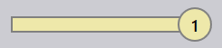
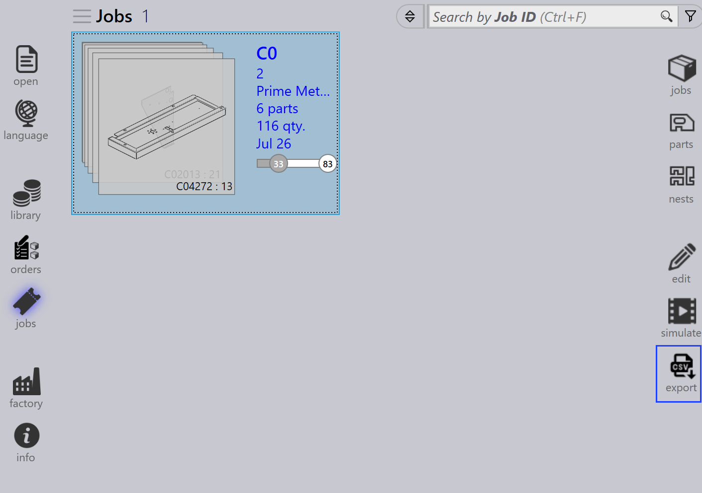

Vista de trabajos
Esta sección explica las diferentes vistas disponibles en la vista de trabajos, incluyendo Jobs, Parts, Nests, Edit, Simulate y Export.
Jobs
Al seleccionar la opción tareas se muestra una lista de todos los trabajos actualmente configurados en el software. Puede hacer doble clic en un trabajo para ver sus detalles o hacer clic derecho para acceder a opciones adicionales.
-
Los trabajos se muestran en vista de mosaicos, donde cada trabajo se muestra con propiedades básicas como ID de trabajo, Ref de trabajo, Nombre del cliente, Total de piezas, Fecha de vencimiento, Barra de estado del trabajo, etc.
-
Cada mosaico de trabajo también muestra imágenes de piezas en formato de tarjetas apiladas. Puede desplazarse por todas las piezas en un trabajo usando la rueda del ratón.

Detalles del trabajo
-
Hacer doble clic en un mosaico o presionar la tecla Enter después de seleccionar un mosaico cambia la vista al Modo de Detalle.
-
La página de detalles muestra la lista de piezas junto con las hojas anidadas (disposiciones), si las hay.
-
Use las teclas de flecha Arriba/Abajo para cambiar entre trabajos en la página de detalles.
-
Desplazar la rueda del ratón sobre la pila de piezas resalta la pieza tanto en la lista de piezas como en las disposiciones.
-
Seleccionar una disposición resalta la disposición y todas las piezas anidadas en ella en la lista de piezas. Los resaltados se desactivan automáticamente después de un minuto.

-
Resumen de nesting:
-
Piezas: Muestra el número total de elementos de pedido y la cantidad total en el trabajo.
-
chapas: Muestra el número total de hojas anidadas junto con la cantidad total de hojas.
-
-
Pasos de trabajo:
-
Plegado: Muestra la máquina asignada y su cantidad de pedido a procesar.
-
Corte: Muestra la máquina asignada y su cantidad de pedido a procesar.
-
Prioridad
-
Primero, haga clic en el icono Jobs en el lado izquierdo de la pantalla, seleccione el trabajo que desea editar y luego haga clic en edit en el lado derecho de la pantalla (asegúrese de que la opción Jobs esté seleccionada).
-
Alternativamente, haga clic derecho en el trabajo seleccionado y haga clic en el icono Comprobar el documento para su edición.
-
Cuando hace clic en edit, aparece la ventana de edición de trabajo. En esta ventana, puede establecer o cambiar la prioridad del trabajo.

-
Según la prioridad de la pieza del trabajo, la Referencia del trabajo en el mosaico del trabajo tiene sombreado de color correspondiente.
-
Las piezas del trabajo se ordenan primero por prioridad y luego por fecha de vencimiento. También tienen sombreado de color según su prioridad.
-
Al anidar, las piezas Urgent se consideran primero, seguidas de High, luego Normal, y finalmente las piezas de prioridad Low se colocan en el espacio restante en las hojas de anidamiento.
-
Las hojas de anidamiento también se ordenan y tienen sombreado de color según la prioridad.
| Prioridad del trabajo | Descripción del color |
|---|---|
|
Urgente |
|
Normal |
|
Alto |
|
Bajo |


Estado
-
La barra de estado del trabajo usa códigos de color para indicar el progreso o condición del trabajo según la cantidad procesada o restante.
-
Las piezas dentro del trabajo y las hojas de anidamiento también se resaltan con colores coincidentes para reflejar su estado individual dentro del trabajo general.
-
La codificación de colores mejora el seguimiento y garantiza que los operadores puedan ver fácilmente el estado de producción de un vistazo.


| Estado del trabajo | Descripción |
|---|---|
|
No listo |
|
Nesting |
|
Listo |
 |
Plegado planificado |
|
Falta chapa |
|
Cola de plegado |
|
Cola de corte |
|
Hecho |


Parts
La vista Active Parts muestra todas las piezas que están actualmente en progreso dentro de trabajos activos.
Cada pieza se representa como un mosaico que muestra detalles clave como nombre de pieza, dimensiones, material, espesor, cantidad y fecha de vencimiento. También se muestra una vista previa visual de la pieza.
Esta vista ayuda a los usuarios a monitorear el estado de procesamiento de piezas individuales y rastrear su progreso a través de trabajos en curso.

Nests
La vista Active Nests muestra todos los anidamientos que están actualmente en progreso dentro de trabajos activos.
Cada anidamiento se representa con detalles relevantes como número de piezas y estado de procesamiento. También se muestra un diseño visual de las piezas anidadas.
Esta vista ayuda a los usuarios a monitorear el progreso del anidamiento y rastrear cómo se organizan y procesan las piezas en las hojas.

Edit
La opción Edit le permite modificar el elemento seleccionado.
Según la vista actual, la instancia seleccionada se abre para edición:
-
En la vista Jobs, el trabajo seleccionado se abre para edición.
-
En la vista Active Parts, la pieza seleccionada se abre para edición.
-
En la vista Active Nests, el anidamiento seleccionado se abre para edición.

Export csv
La opción Export le permite seleccionar información del trabajo y exportarla a un archivo CSV.
-
Haga clic en el icono jobs.
-
Haga clic en la opción export en el lado derecho de la pantalla.

-
Aparece un cuadro de diálogo que muestra los campos disponibles:

-
Seleccione las casillas de verificación de los campos que desea exportar.
-
Use la opción Group By si desea agrupar los datos por un campo seleccionado.
-
Haga clic en Export para generar el archivo CSV.
Información adicional
También hay tres iconos adicionales en el lado derecho de la pantalla que son simular, Goto y atrás.
-
Simulate abrirá el elemento seleccionado para una vista más detallada.
-
Goto cambiará el enfoque y la visualización a la pieza o el anidamiento que está seleccionado.
-
Back retrocederá un nivel desde donde se encuentra actualmente, por ejemplo, al hacer clic en atrás mientras está en simulación lo llevará de vuelta al trabajo principal y desde un trabajo lo llevará de vuelta a la pantalla principal de trabajos.